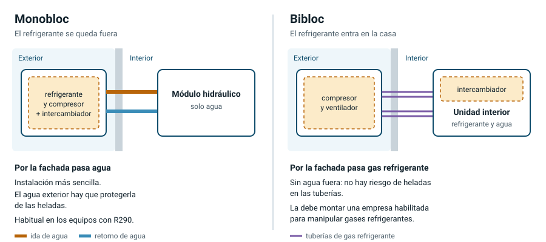

Aerotermia monobloc o bibloc: cuál elegir
Actualizado el 21 de noviembre de 2026 · Cómo verificamos los datos
La diferencia está en qué pasa por la fachada. En un equipo monobloc, todo el circuito de gas refrigerante está en la unidad exterior y a la casa entran tuberías de agua. En un bibloc, el gas refrigerante viaja hasta una unidad interior. El monobloc es más sencillo de instalar; el bibloc evita llevar agua por el exterior.

Diferencias, una a una
| Monobloc | Bibloc | |
|---|---|---|
| Qué cruza la fachada | Tuberías de agua | Tuberías de gas refrigerante |
| Quién puede instalarlo | Empresa instaladora térmica habilitada | Además, habilitada para manipular gases refrigerantes |
| Riesgo de heladas | Hay que proteger el agua que va por fuera | No hay agua en el exterior |
| Unidad exterior | Más grande y pesada, lleva el intercambiador | Algo más compacta |
| Unidad interior | Módulo hidráulico sencillo, a veces muy pequeño | Unidad con intercambiador; suele ocupar algo más |
| Distancia entre unidades | Corta: cuanto más larga, más pérdidas de calor por las tuberías de agua | Admite más distancia, dentro de los límites del fabricante |
| Refrigerante habitual | R290 en muchos equipos nuevos | R32 en muchos casos |
| Instalación | Más rápida y algo más barata | Requiere vacío y carga del circuito de gas |
Por qué el monobloc gana terreno
La normativa europea sobre gases fluorados está empujando a los fabricantes hacia refrigerantes con menor impacto climático. El R290, que es propano, tiene un impacto mucho menor que el R32 y permite calentar el agua a más temperatura, algo útil con radiadores. Como es inflamable, lo más práctico es mantenerlo confinado en la unidad exterior: por eso la mayoría de equipos con R290 son monobloc.
Cuándo elegir monobloc
- La unidad exterior puede ir cerca de donde estará el módulo interior: pocos metros de tubería de agua.
- Quieres el refrigerante fuera de casa.
- Te interesa un equipo con R290 para trabajar con radiadores a más temperatura.
- Hay poco espacio interior: el módulo hidráulico de un monobloc puede ser muy pequeño.
Cuándo elegir bibloc
- La unidad exterior tiene que ir lejos, por ejemplo en la cubierta o en otra fachada.
- Zona de heladas fuertes y un recorrido exterior largo, donde proteger el agua sería complicado.
- Hay que reducir el tamaño de la unidad exterior por espacio o estética.
Lo que no cambia
- El funcionamiento para el usuario es el mismo.
- El rendimiento, entre equipos comparables, es parecido.
- Las ayudas son las mismas.
- Ambos necesitan una revisión anual.
Preguntas para el instalador
- ¿Por qué propone monobloc o bibloc en mi caso?
- ¿Cuántos metros de tubería habrá entre unidades y por dónde irán?
- Si es monobloc, ¿cómo se protege el agua exterior de las heladas?
- Si es bibloc, ¿la empresa está habilitada para manipular gases refrigerantes?
- ¿Qué refrigerante usa el equipo?
Para ver cómo encaja cada pieza dentro de la casa, mira el esquema de una instalación de aerotermia.
Descripción técnica general de los dos tipos de equipo. Cada fabricante fija en su ficha técnica las distancias máximas, refrigerantes y requisitos de instalación de sus modelos.
Preguntas frecuentes
¿Cuál es más eficiente?
Entre equipos de gama comparable, el rendimiento es muy parecido. La elección depende más de la instalación que de la eficiencia.
¿Qué es un equipo compacto o «todo en uno»?
Una unidad interior que integra el módulo hidráulico y el depósito de agua caliente en un solo mueble. Existe tanto en versión monobloc como bibloc.
¿Qué pasa con el agua del monobloc si hiela?
Las tuberías de agua que van por fuera deben protegerse: con aislamiento, con válvulas que vacían el circuito exterior si hiela o con anticongelante en el agua. El instalador debe prever una de estas soluciones en zonas frías.